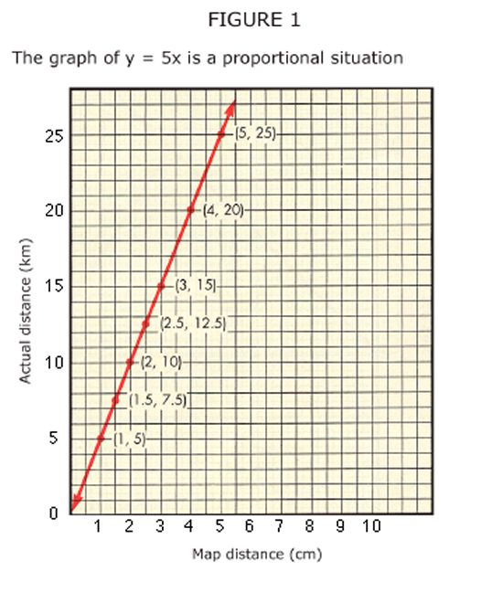
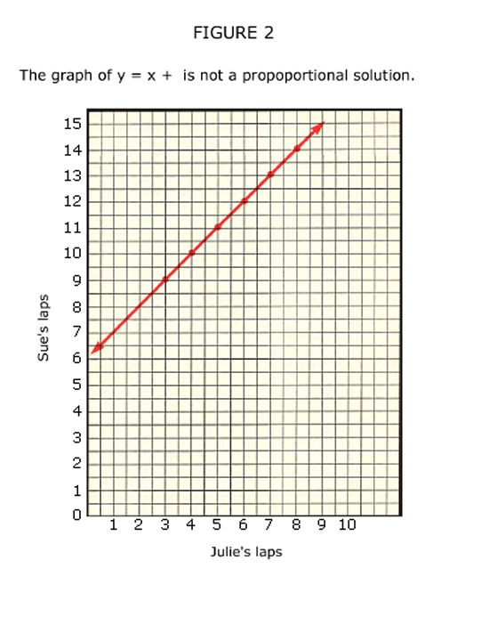

|
||||||||||||||||||||||||||||||
|
MAKING CONNECTONS: A CASE FOR PROPORTIONALITY Kathleen Cramer and Thomas Post Proportional reasoning is one form of mathematical reasoning. Many aspects of our world operate according to proportional rules. In the science classroom, proportionality surfaces when density is explored, when balance beams are used, and when any two equivalent rates are compared. In the mathematics classroom, proportionality surfaces when properties of similar triangles are examined, when scaling problems are investigated, and when trigonometric functions are defined. The importance of proportional reasoning is stressed in the Curriculum and Evaluation Standards for School Mathematics (NCTM 1989, 82). The ability to mason proportionally develops in students through guides 5-8. It is of such great importance that it merits whatever time and effort must be expended to assure its careful development. Students need to see many problem situations that can be modeled and then solved through proportional reasoning.
Defining Proportionality The ability to solve missing-value problems has been used to indicate that a student is a proportional reasoner (Karplus, Pulas, and Stage 1983; Noelting 1980). Missing value problems are the typical tasks found in middle school mathematics textbooks wherein three or four values in two rate pairs are given and the fourth is to be found. The following is a missing-value story problem. The standard algorithm taught to solve this type of problem involves setting up a proportion and using the cross-product algorithm. The formula for mixing a certain shade of blue paint is 2 parts blue paint and 3 parts white paint. At this rate, how much white paint is needed if 9 parts of the blue paint is used (2/3 = 9/x; 2x = 27; x=13.5) Post, Behr, and Lesh (1988) believed that using solutions to missing-value problems as the sole indicator of proportional reasoning is much too restrictive, since answers lend themselves to purely algorithmic and possibly rote solutions. The factors involved in defining proportional reasoning are more complex. One way to document knowledge in mathematics is to describe the behaviors that depict understanding. We understand enough about what it means to be a proportional thinker to realize that it involves the following:
Understanding the mathematical characteristics of proportional situations is the most important part of this picture. One critical mathematical characteristic of proportional situations is the multiplicative relationship that exists among the quantities that represent the situation. This multiplicative relationship can be explored through tables, algebraic expressions, and coordinate graphs. By examining the mathematical characteristics of proportional situations, one sees the importance of making mathematical connections that will inevitably empower students to function intelligently when solving problems. This article first explores the mathematical characteristics of proportional situations and then explains that this knowledge will enable students to solve a proportional reasoning problem in several ways. The article concludes by analyzing the mathematical connections that are made as mathematical characteristics are explored and applied.
Mathematical Characteristics of Proportional Situations As just stated, the critical component of all proportional situations is the multiplicative relationship that exists between the quantities that represent the situation. Consider this proportion problem: The scale on a map suggests that I centimeter represents an actual distance of 5 kilometers. The map distance between two towns is 8 centimeters. What is the actual distance? A table can help highlight this relationship (see table 1). |
||||||||||||||||||||||||||||||
|
||||||||||||||||||||||||||||||
|
 |
||||||||||||||||||||||||||||||
|
The numerical relationship that exists between the two quantities of map distance and actual distance can be expressed in two ways. If we multiply map distance by 5 km/cm, we find the corresponding number of kilometers for the actual distance. If we multiply the actual distance by 1/5 cm/km, we find the corresponding number of centimeters for the map distance. The constant factors 5 or 115 can be used to express either form of the numerical relationship algebraically: actual distance = 5 km/cm x map distance or map distance = 1/5 cm/km x actual distance. In all proportional situations, the numerical relationship between quantities can be expressed by a rule in the form y = mx, where m is one of the constant factors relating the two quantities. The graph of the rule y = 5x, with y actual distance and x = map distance shows another mathematical characteristic of proportional situations (see fig. 1). The graph of y = 5x is a straight line, climbs from left to right (has positive slope), and passes through the origin. The graph of y = 1/5x has similar characteristics. In all proportional situations, the points of the graph lie on a straight line. In real-world settings these lines always have positive slope. The points from table 1 are highlighted on the graph along with two points, (1.5, 7.5) and (2.5, 12.5), which are not recorded on the table. Note that these points fall on the line. All rate pairs for the given proportional situation fall on the line. Graphing linear equations is a topic developed in the middle grades. Students graph variations of the general linear equation y = mx + b, explore different definitions of slope, describe the characteristics of line graphs, and relate the characteristics of line graphs to the general equation on is slope and b is y-intercept). By applying our knowledge of straight-line graphs to graphs of proportional situations, we see that for the rule y = nix, m is the slope of the line. The slope of the line of proportional situations is always the constant factor relating the two quantities. For our map example the constant factor 5, which can be used to define the relationship between map distance and actual distance as y = 5x, is the slope of the line for the graph of y = 5x. We also know that y = mx crosses the origin because in this equation "b" is 0. Another interesting characteristic of proportional situations can be shown by recording the different rate pairs (actual distance/map distance) found in table 1 as fractions: 5/1, 10/2, 15/3, 20/4, and 25/5. All these fractions have a value of 5. Again, we see the presence of the constant factor 5. The reciprocal rate pairs, 1/5, 2/10, 3/15, and so on, all have a value of 1/5. This special characteristic of equivalent rate pairs that exist in all proportional situations enables one to use the cross-product algorithm. The following list summarizes the mathematical characteristics of proportional situations:
The importance of understanding the mathematical characteristics of proportional situations can be highlighted by the following two problems:
Superficially the two problems took alike. Each contains three pieces of information with one unknown. They look like missing value problems found in a sixth- or seventh grade mathematics text. Thirty-two out of thirty-three preservice students solved both problems by setting up a proportion and using the cross-product algorithm to reach an answer. The cross-product algorithm is an appropriate strategy for the money exchange problem because that context represents a proportional situation. It is not an appropriate strategy for the running-laps problem because that problem is not a proportional situation and depicts an additive, and not a multiplicative, situation. An understanding of why procedures work and under what conditions procedures can be applied are objectives that are often lacking in mathematics instruction. When one has a superficial understanding of a concept, it is easy to apply memorized rules in the wrong situation. If we look closely at the running-laps problem, checking it against our list of characteristics of proportional situations, we can see the importance of having a deeper understanding of this context. Being able to look beyond the superficial characteristics of proportional situations will enable students to make appropriate decisions as to when and if a procedure can be applied. Constructing a table helps to identify the numerical relationship between the two quantities (see table 2). |
||||||||||||||||||||||||||||||
|
 |
||||||||||||||||||||||||||||||
|
The numerical relationship between the number of Julie's laps and the number of Sue's laps can be expressed algebraically: Sue's laps = Julie's laps + 6. The numerical relationship is a constant sum, not a constant factor. The graph in figure 2 is a straight line with positive slope, but the line crosses the y-axis at (0, 6) and not at the origin. If the situation were proportional, then the graph would have intersected the origin. If we express the rate pairs as fractions - 9/3, 10/4, 11/5, 12/6 - we see that they do not have the same value. In proportional situations, all rate pairs are equivalent. The proportion algorithm based on equivalent rates, therefore, is not the appropriate solution strategy for this example. Having a deeper understanding of the mathematical characteristics of proportional situations enables students to solve problems in multiple ways. As Post, Behr, and Lesh (1988) state, "Equipping students with a variety of perspectives and solution strategies fosters not only better understanding but also a more confident and flexible approach to problem solving."
Applying Knowledge of the Mathematical Characteristics of Proportional Situations A student can use his or her knowledge of the mathematical characteristics of proportional situations to solve the following task in several ways.
|
||||||||||||||||||||||||||||||
|
||||||||||||||||||||||||||||||
| Possible solutions:
If the number of pairs are related proportionally, then the rate pairs should
form a set of equivalent fractions. The fractions 3/2, 6/4, 9/6, 12/8, and
15/10 all have a value of 3/2, so the data are proportionally related. This
fact validates the use of the cross-product-algorithm solution strategy
to find the corresponding y-values for x = 16 - 3/2 = y/16, 2y = 48, and
y = 24; and for x = 19 - 3/2 = y/19, 2y = 57, and y = 57/2. Since this is
a proportional situation, the constant rate, 3/2, is the constant factor
for the rule relating the data in the table; y = (3/2)x. Note that 2/3,
the reciprocal of 3/2, is the other constant factor relating x and y. The
equation x = (2/3)y would be used if one was given a y-value and x was unknown.
A solution strategy using the graphing characteristics is possible. The graph in figure 3 connects the data points from the table by a straight line. The graph is a straight line with positive slope, and when it is extended it passes through the origin. One can conclude that the data are proportionally related. Since all data points will fall on the line, the line can be extended upward and the corresponding y-value for x = 16 can be found as shown in figure 4. The graph is less helpful for finding the corresponding y-value for x = 19, since it crosses between integral values. The rule for describing the data would be helpful. To find the rule first find the slope of the line, which can be found from the graph. It is the ratio of the vertical distance between two points on the graph to the horizontal distance. The right triangle seen in figure 4 shows the slope to be 3/2. Note that for any two points selected the slope will have a value equal to 3/2. The slope of the line is the m in the equation, so the rule is y = (3/2)x. The corresponding value for x= 19can be found using the formula y = (3/2)(19). Multiple solution strategies give students the power to choose a strategy that best fits the data; the resources they have available, such as a graphing calculator; and their personal preferences. In general it is always a good idea to view a concept from multiple perspectives.
|
||||||||||||||||||||||||||||||
|
Mathematical Connections What connections have been made as we explored the mathematical characteristics of proportional situations? First, we represented proportional contexts in a table to examine number patterns. We then translated the numerical relationship relating the two quantities into algebraic sentences. We translated the algebraic representation to a graphical representation. Examining the relationships among different representations is important. Different representations highlight different aspects of the situation, each fostering insights and interconnections to the other. NCTM's curriculum standards (1989) emphasize the importance of making connections among tables, algebraic generalizations, and graphical representations. Proportionality presents a good way to make these connections. To continue our exploration of the mathematical characteristics of proportional situations, we used our knowledge of line graphs, slope, and y-intercept to make additional generalizations about graphs of proportional situations. Students need to understand that they can often use one form of a mathematical idea to help them understand another idea. This "persistent attention to recognizing and drawing connections among topics will instill in students an expectation that the ideas they learn are useful in solving other problems and exploring other mathematical concepts" (NCTM 1989, 85). Understanding proportionality by using several representations enables students to evaluate problem situations critically and to determine whether the context is proportional or nonproportional. Empowering Students means not only equipping them with strategies to solve problems but helping them understand underlying concepts so they can apply strategies appropriately at a later stage. In conclusion, by exploring the mathematical characteristics of proportional situations, students learn a variety of very important mathematical strategies for solving proportional-reasoning problems. Different representations
of problems serve as different lenses through which students interpret
the problems and the solutions. If students are to become mathematically
powerful, they must be flexible enough to approach situations in a variety
of ways and recognize the relationships among different points of view
(NCTM 1989,84). Kathleen Cramer teaches at the University of Wisconsin, River Falls, WI 54022. She has studied the teaching and learning of rational numbers for a number of years. Thomas Post teaches at the University of Minnesota, Minneapolis, MN 55455. He is the codirector of the National Science Foundation sponsored Rational Number Project. References Karplus, Robert, Steven Pulas, and Elizabeth Stage. "Proportional Reasoning and Early Adolescents." In Acquisition of Mathematics Concepts and Processes, edited by Richard Lesh and Marsha Landau. New York: Academic Press, 1983. National Council of Teachers of Mathematics. Curriculum and Evaluation Standards for School Mathematics. Reston, Va.: The Council, 1989. Noelting, Gerald. The Development of Proportional Reasoning and the Ratio Concept, Part 1 - the Differentiation of Stages, Educational Studies in Mathematics II, 217-53. Boston: Reidell Publishing Co., 1980. Post, Thomas, Merlyn Behr, and Richard Lesh. "Proportionality and the Development of Prealgebra Understandings.- In The Ideas of Algebra, K12, 1988 Yearbook of the National Council of Teachers of Mathematics, edited by Arthur I. Coxford and Albert P. Shulte, 78-90. Reston, Va.: The Council, 1988. |
||||||||||||||||||||||||||||||